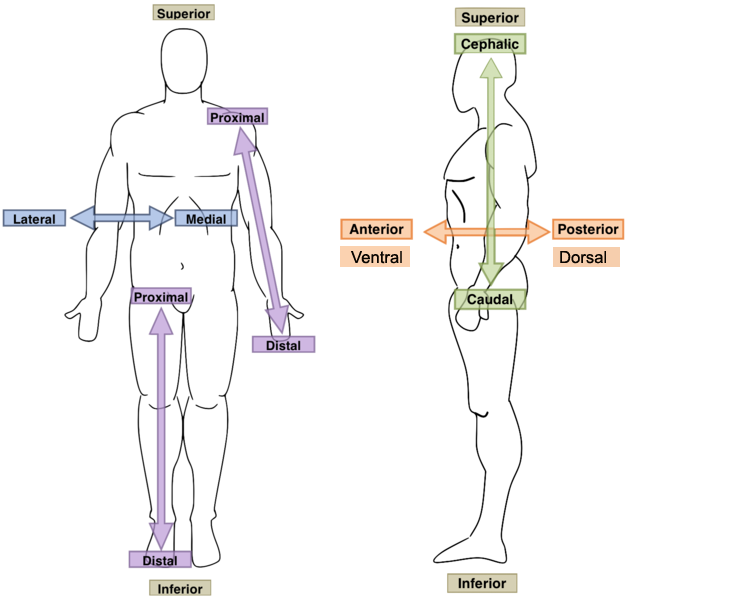

Superior means "Higher Than".
Inferior means "Lower Than".
Anterior means "Front-Side".
Posterior means "Back-Side".
Medial means "middle".
Lateral means "closer to the side".
Intermediate is the area inbetween Medial and Lateral
Proximal means "closer to the joint connecting to the torso".
Distal means "farther from the joint connecting to the torso".
Superficial means "closer to the outside".
Deep means "closer to the inside".